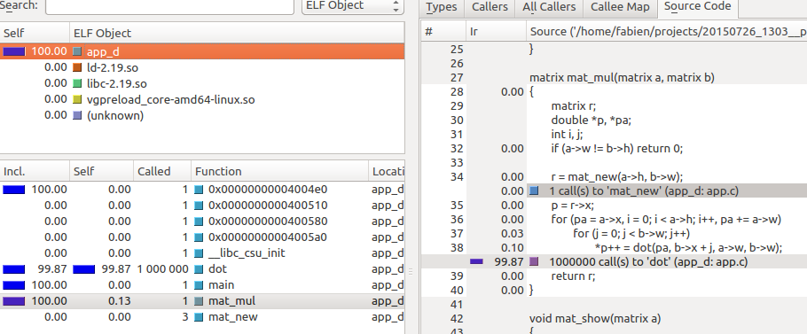
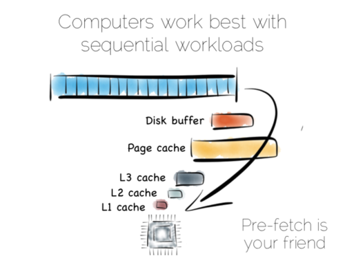
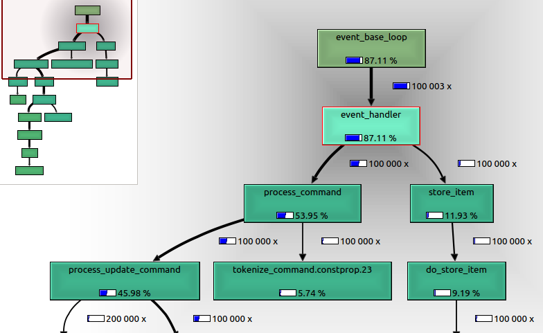
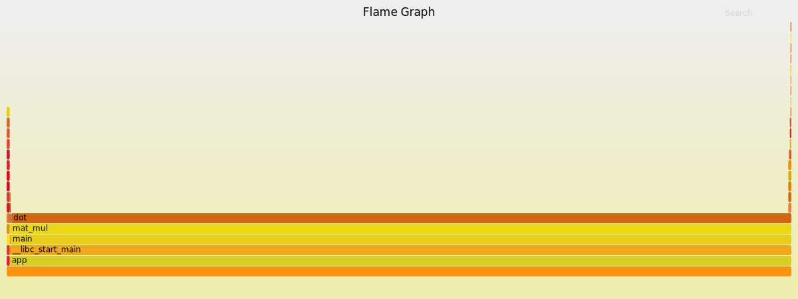
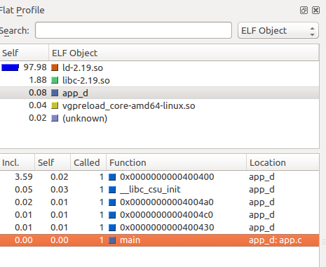
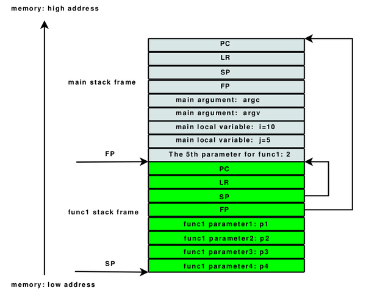

Deep into your application ...
Performance & profiling
About @farcellier
|
What's the menu
- What means profiling a application ?
- How does it works ?
- Apply on real world application memcached
Profiling in a few words ...

Software profiling is a form of dynamic program analysis that measures, for example :
- the space or time complexity of a program
- the usage of particular instructions
- the frequency and duration of function calls, ...
@copyright wikipedia
to get this sort of report ...
to have a better view on what's happens on your hardware, ...
@copyright highscalability
to improve your application performance, ...
@copyright macifcourseaularge
You need measurements to improve continuously your application performance.
to understand your application, ...
You want to understand what is consuming your CPU.
to monitor your server, ...
You want to understand what your CPUs are doing.
At the beginning there is a program ...
int main(void)
{
return 0;
}
int func1(void) {
return 0;
}Use gcc to compile it
gcc -c app.c -o appwith a simple symbols table ...
readelf - Displays information about ELF filesreadelf -s app45: 0000000000400580 2 FUNC GLOBAL DEFAULT 13 __libc_csu_fini
46: 00000000004004f8 11 FUNC GLOBAL DEFAULT 13 func1
...
57: 0000000000601040 0 NOTYPE GLOBAL DEFAULT 25 _end
58: 0000000000400400 0 FUNC GLOBAL DEFAULT 13 _start
59: 0000000000601038 0 NOTYPE GLOBAL DEFAULT 25 __bss_start
60: 00000000004004ed 11 FUNC GLOBAL DEFAULT 13 main
...- 00000000004004ed : Virtual address of the symbol
- FUNC : type.
- main : Name of the symbol
How it works ?
|  |  |
60: 00000000004004ed 11 FUNC GLOBAL DEFAULT 13 mainCapture events and associate them to symbols
Generally we can list 3 type of profilers :
- Instrumented profiling
- Sampling profiling
- Event-based profiling (Java, .Net, ...)
Instrumented profiling
Gprof, Callgrind, ...
- Pro
- Capture all events
- Granularity
- Cons
- Slower than raw execution (20 times slower for callgrind)
- Intrusive (modify code assembly or emulate a virtual processor)
- What they capture and what they show could differs
Tooling - Callgrind
- Callgrind is a callgraph analyzer that comes with Valgrind.
- Valgrind is a virtual machine using just-in-time (JIT) compilation techniques.
Example with a matrix calculus
You can instrument your execution with callgrind and explore on kcachegrind.
Sampling profiling
Perf, Oprofile, Intel Vtune, ...
- Pro
- ~5 or 10% slower than raw execution
- Run on any code
- Cons
- Some events are invisible
Sandbox - Write my own sampling profiler
To understand how simple a sampling profiler is, write your own thread dump using gdb.
gstack() {
tmp=$(tempfile)
echo thread apply all bt >"$tmp"
gdb -batch -nx -q -x "$tmp" -p "$1"
rm -f "$tmp"
}
You execute with frequency to know where your program is spending time
while sleep 1; do gstack @pid@ ; doneTooling - Perf & Flamegraph
- Perf instrumentation appears on linux 2.6+ (Ubuntu 11.10 & redhat 6)
- common interface for hardware counter
- Flamegraph is actively developped by Brendan Gregg
Example with a matrix calculus
We don't have any time record on mat_new, even if it's called 3 times.
Flamegraph installation
git clone https://github.com/brendangregg/FlameGraph.git
sudo ln -s $PWD/flamegraph.pl /usr/bin/flamegraph.pl
sudo ln -s $PWD/stackcollapse-perf.pl /usr/bin/stackcollapse-perf.pl
sudo ln -s $PWD/stackcollapse-jstack.pl /usr/bin/stackcollapse-jstack.pl
sudo ln -s $PWD/stackcollapse-gdb.pl /usr/bin/stackcollapse-gdb.plWhat's happends inside memcache ?
Compile memcache
git clone https://github.com/memcached/memcached.git
cd memcached
./configure && make
What's hidden inside memcache binary ?
readelf -s ./memcached
...
434: 000000000040edf0 10 FUNC GLOBAL DEFAULT 13 slabs_rebalancer_resume
435: 0000000000000000 0 FUNC GLOBAL DEFAULT UND setuid@@GLIBC_2.2.5
436: 0000000000000000 0 FUNC GLOBAL DEFAULT UND event_base_loop
437: 0000000000412fd0 315 FUNC GLOBAL DEFAULT 13 pause_threads
438: 00000000004135e0 10 FUNC GLOBAL DEFAULT 13 STATS_LOCK
439: 0000000000000000 0 FUNC GLOBAL DEFAULT UND getaddrinfo@@GLIBC_2.2.5
440: 0000000000000000 0 FUNC GLOBAL DEFAULT UND strerror@@GLIBC_2.2.5
441: 000000000040f550 201 FUNC GLOBAL DEFAULT 13 do_item_unlink
442: 0000000000000000 0 FUNC GLOBAL DEFAULT UND event_init
443: 0000000000000000 0 FUNC GLOBAL DEFAULT UND sleep@@GLIBC_2.2.5
444: 0000000000412b40 247 FUNC GLOBAL DEFAULT 13 assoc_delete
...
What's happens when I write 100 record on Memcache
- Doing a test with valgrind (not production friendly)
- Capture cpu usage with gdb
- Capture cpu usage with perf_event
- Capture cache miss with perf_event
Memcache - Profiling with callgrind
Understand what's happen internally by following execution trace.
valgrind --tool=callgrind --instr-atstart=no ./memcachedOn another terminal
callgrind_control -i on
php memcache-set.php
callgrind_control -i offMemcache - Profiling with callgrind
kcachegrind callgrind.out.@pid@Memcache - Profiling with gdb
./memcached &
while sleep 0.1; do gstack 8748; done > stack.txt
cat stack.txt | stackcollapse-gdb.pl | flamegraph.pl > gdb_graph.svgIn an another terminal
php memcache-set.php
Memcache - Profiling with perf
We capture events to build callgraph
perf record -g ./memcachedIn an another terminal
php memcache-set.php
To show an interactive report
perf report
perf report --stdioMemcache - Profiling CPU cycle with perf
perf script | stackcollapse-perf.pl | flamegraph.pl > graph_stack_missing.svg{kind=link}
Some information from kernel are missing.
Memcached - Profiling CPU cycle with perf - with kernel stacktrace
./memcached &
sudo perf record -a -g -p @pid@In an another terminal
php memcache-set.php
Generate the flamegraph
perf script | stackcollapse-perf.pl | flamegraph.pl > graph.svg{kind=link}
Memcached - Profiling Cache miss with perf
./memcached &
sudo perf record -e branch-misses -a -g -p @pid@System - What's your system is doing ?
sudo perf record -a -gUse flamegraph with java
You can export a flamegraph from jstack output
Logstash contention flamegraph{kind=link}
Going further
To summary
Prefer :
- perf when you are looking for a bottleneck or you want to watch what's happens on a machine
- callgrind when you want to understand what's happen in the code and when the performance is not a requirement